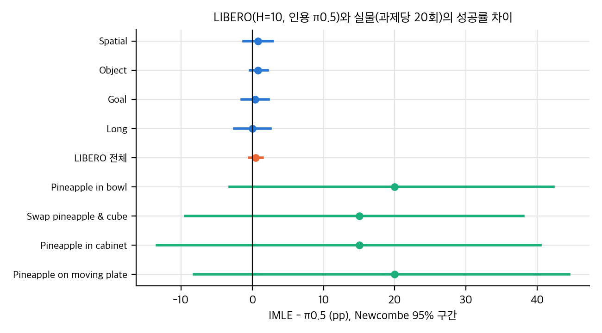
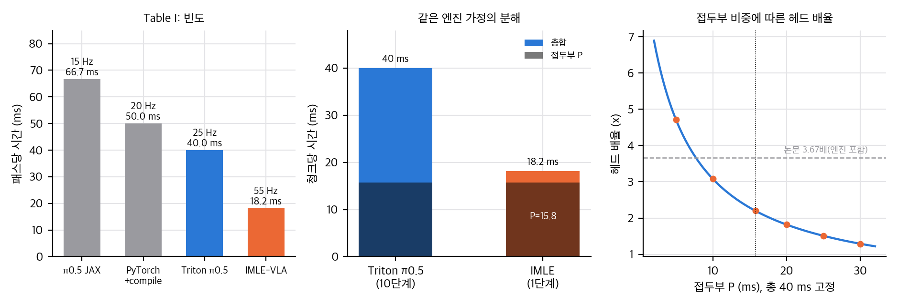
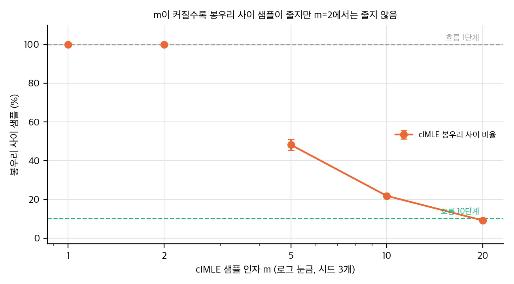
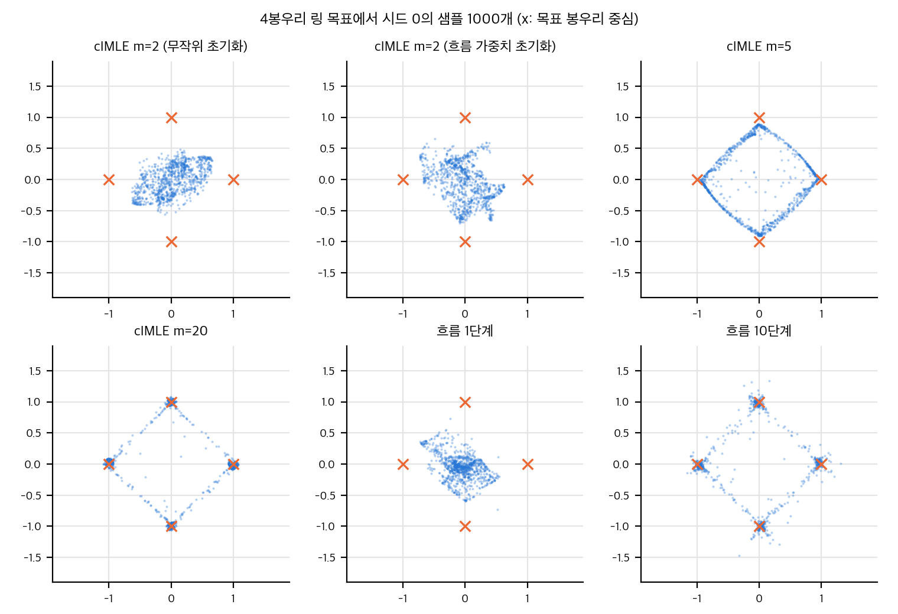

03 §1).03 §2). 과제당 20회, 제로샷, 시드 하나입니다.03 §4, 민감도 그림).03 §5.1, 04 D12).04 D4–D6, D8).03 §7, §7.1).04 §4).
직접 계산: LIBERO(H=10, 인용 π0.5)와 실물 과제의 성공률 차이와 Newcombe 95% 구간. 주황은 LIBERO 전체, 파랑은 suite, 초록은 실물 과제.

직접 계산: 빈도별 패스 시간(왼쪽), 같은 엔진 가정의 P와 a 분해(가운데), 접두부 P에 따른 헤드 배율(오른쪽). 점선은 논문의 전체 배율 3.67.
논문: IMLE-VLA: Fast Single-Step Action Generation for Vision-Language-Action Policies 저자: Kian Hosseinkhani, Qinhe Peng, George Shramko, Mehran Aghabozorgi, Jianing Qian, Tristan Engst, Alireza Moazeni, Dinesh Jayaraman, Ke Li (Simon Fraser University, University of Pennsylvania, Amii) arXiv: 2609.10915, v1 (2026-09-10). 8쪽, 그림 5, 표 5. 이 폴더는 v1만 확인했습니다. 학회: IEEE/RSJ IROS 2026 채택(초록 주석과 프로젝트 페이지 확인). 권리 표기: arXiv 비독점 배포(nonexclusive-distrib 1.0), CC BY 아님. v1 PDF 전체 텍스트와 1쪽 하단을 확인했고 저작권 문구(© IEEE 등)는 없었음. 판단 근거는 arXiv 라이선스뿐이며, 보수적으로 논문 그림·표는 개인용에만 씀.
원문 쪽 번호는 PDF 기준입니다. 절·표·그림 번호는 논문 표기를 따랐습니다.
초록은 다섯 가지를 주장합니다.
세 갈래로 나눕니다. 자세한 계보와 대조는 02 §1–2 에 있습니다.
04 §1).03 §4).이 절의 정보로는 재구현이 되지 않습니다. 빠진 항목은 다음과 같습니다.
| 항목 | 논문의 서술 | 공식 코드에서 찾은 값 |
|---|---|---|
| chunk 길이 C | 없음 | LIBERO 50(H=10 모델)·100(H=30 모델), DROID 16 (04 D5) |
| 잠재 차원 | "A와 같다" | 패딩된 행동 차원 포함 전체 chunk 형태 (04 D10) |
| 훈련 스텝, 학습률, 배치 | 없음(실물에서 DROID만 언급) | LIBERO 10k 스텝, 배치 140(4 GPU), 학습률 1.25e-5(H=10 모델) 또는 1.25e-4(H=30) (04 D5, D8) |
| EMA | 없음 | LIBERO 0.999, DROID 0.99. 평가는 EMA 가중치 (04 D4) |
| 체크포인트 선택 | 없음 | LeRobot 저장소 README는 "suite별 최고 체크포인트"라고 씀 (04 D6) |
| 시간 조건(t) | 없음 | 학습·추론 모두 t = 1로 고정. 행동 expert의 시간 입력은 상수 (04 §1) |
| ε, 거절 기준 | 없음 | 해당 없음. 거절 샘플링이 아니라 m개 중 argmin입니다 |
realtime-vla-imle/, 약 18 ms/호출, L40S, 2뷰 224×224)입니다. JAX 기준선과 엔진이 다릅니다. 같은 엔진 기준 비교는 논문에 없습니다(03 §4).03 §1).03 §5에서 다룹니다.논문에는 Limitations 절이 없습니다. 본문에서 한계로 읽힐 수 있는 문장은 다음입니다.
| 주장 | 근거 | 이 폴더의 판정 |
|---|---|---|
| 55 Hz, 3.67배 | Table I, 같은 엔진 비교 없음 | 측정은 맞지만 엔진이 다름. 헤드만의 효과는 약 2.2배(03 §4) |
| 처리량 11배 | Table III, H=30 | 산술은 맞음. 빈도와 H의 곱이라 성공률 비교와 분리해야 함 |
| LIBERO 98.0%, 최고 | Table II | 수치는 맞음. π0.5 대비 차이 0.5pp, 유의하지 않음(p = 0.34, 03 §1) |
| LIBERO-plus 유지 | Fig. 2 | 수치 없음, 판정 보류 |
| 실물 4과제 우세 | Table V | 합산 p = 0.015, 과제별 유의하지 않음(03 §2) |
| jerk 2.2–3.0배 | Table V | 정의는 코드와 맞음. 집계 방식과 분산 없음(04 D11) |
| VLA-WC 3.9–6.6배 | Table V | 정의(성공 에피소드당)와 값의 규모가 맞지 않음(03 §5) |
이 문서의 수치는 analysis/table_check.py(→ table_check_results.json)와 analysis/imle_toy.py(→ imle_toy_results.json)에서 나옵니다. 모두 CPU, numpy·scipy, 1스레드로 실행했습니다.
검정의 한계(먼저 읽기). 논문 표는 반올림된 백분율과 평균만 줍니다. 그래서 suite별 성공 횟수는 백분율 × 500으로 정수가 되는 값을 골랐습니다(0.2pp 간격이 1회이므로 모두 정수). 공통 한계는 다음과 같습니다.
직접 계산: LIBERO와 실물의 성공률 차이, Newcombe 95% 구간.
| suite | IMLE 성공 | π0.5 성공(인용) | 차이 | Fisher p | Holm p | IMLE Wilson 95% |
|---|---|---|---|---|---|---|
| Spatial | 490/500 (98.0) | 486/500 (97.2) | +0.8pp | 0.54 | 1.00 | 96.4–98.9 |
| Object | 499/500 (99.8) | 495/500 (99.0) | +0.8pp | 0.22 | 0.87 | 98.9–100.0 |
| Goal | 491/500 (98.2) | 489/500 (97.8) | +0.4pp | 0.82 | 1.00 | 96.6–99.1 |
| Long | 480/500 (96.0) | 480/500 (96.0) | 0.0pp | 1.00 | 1.00 | 93.9–97.4 |
| 전체 | 1960/2000 (98.0) | 1950/2000 (97.5) | +0.5pp | 0.34 | — | 97.3–98.5 |
04 D6). 선택 기준이 평가 성공률이라면 선택 편향이 있어 차이를 과장합니다.| 과제 | IMLE | π0.5 | Fisher p | Holm p | IMLE Wilson 95% |
|---|---|---|---|---|---|
| Pineapple in bowl | 19/20 | 15/20 | 0.18 | 0.73 | 76.4–99.1 |
| Swap pineapple & cube | 18/20 | 15/20 | 0.41 | 0.90 | 69.9–97.2 |
| Pineapple in cabinet | 15/20 | 12/20 | 0.50 | 0.90 | 53.1–88.8 |
| Pineapple on moving plate | 16/20 | 12/20 | 0.30 | 0.90 | 58.4–91.9 |
| 합산 (68/80 대 54/80) | 85.0% | 67.5% | 0.015 | — | — |
| 구성 | 빈도(Hz) | 패스당 시간(ms) | 대비 π0.5 JAX |
|---|---|---|---|
| π0.5 JAX (Table I) | 15 | 66.7 | 1.00 |
| PyTorch + compile | 20 | 50.0 | 1.33 |
| Triton π0.5 (Table I) | 25 | 40.0 | 1.67 |
| IMLE-VLA (Table I) | 55 | 18.2 | 3.67 |
Table IV(LIBERO, 성공 에피소드당 평균):
| 행 | 패스 수 | VLA-WC(s) | 패스당 시간(ms) |
|---|---|---|---|
| π0.5 H=10 | 15.4 | 1.03 | 66.9 |
| IMLE H=10 | 15.5 | 0.28 | 18.1 |
| IMLE H=30 | 5.4 | 0.10 | 18.5 |
Table III(LIBERO 처리량 = 빈도 × H): π0.5 H=10 150 Hz, IMLE H=10 550 Hz(3.67배), IMLE H=30 1650 Hz(11.0배). 11.0배는 빈도 3.67배 × H 3배입니다. 성공률은 H에 따라 떨어지므로(Fig. 3) 처리량 배율을 성공률과 같이 보고해야 합니다.
Table V(실물 VLA-WC 배율): 6.63, 5.73, 3.92, 5.36(논문 3.9–6.6 ✓).
직접 계산: 빈도별 패스 시간, 같은 엔진 가정의 분해, 접두부 P에 따른 헤드 배율.
논문은 3.67배를 "단일 단계 헤드 효과"로 설명하지만, 비교 대상(JAX π0.5)과 IMLE 측정(Triton 엔진)의 엔진이 다릅니다. 두 요인으로 나눠 봅니다.
같은 엔진 가정에서의 역산. 한 청크 시간을 T = P + n·a로 씁니다. P는 VLM 접두부(KV 캐시 생성), a는 행동 expert 1회, n은 단계 수입니다.
민감도. 총 40 ms를 고정하고 P를 바꿉니다(표 T6).
| P(접두부, ms) | a(ms) | IMLE 시간(ms) | 헤드 효과 배율 |
|---|---|---|---|
| 5 | 3.5 | 8.5 | 4.71 |
| 10 | 3.0 | 13.0 | 3.08 |
| 15.8 | 2.42 | 18.2 | 2.20 |
| 20 | 2.0 | 22.0 | 1.82 |
| 25 | 1.5 | 26.5 | 1.51 |
| 30 | 1.0 | 31.0 | 1.29 |
필요한 측정. 같은 장비, 같은 엔진(realtime-vla)에서 π0.5 10단계와 IMLE 1단계를 재면 헤드 배율이 직접 나옵니다. 이 맥에서는 CUDA가 없어 불가합니다.
Table V의 VLA-WC는 성공 에피소드당 값이라고 정의됩니다. 패스 시간과 H로 환산하면 다음과 같습니다.
| 과제 | π0.5 패스 수(66.7 ms 기준) | 같은 패스로 H=8 행동을 15 Hz에서 실행했을 때 로봇 시간 | IMLE 패스 수(18.2 ms) | H=12, 15 Hz 로봇 시간 |
|---|---|---|---|---|
| Pineapple in bowl | 1,844 | 984 s (16 분) | 1,020 | 816 s |
| Swap pineapple & cube | 2,673 | 1,426 s (24 분) | 1,709 | 1,367 s |
| Pineapple in cabinet | 5,838 | 3,114 s (52 분) | 5,462 | 4,369 s |
| Pineapple on moving plate | 1,342 | 716 s (12 분) | 918 | 734 s |
04 D12). 이는 "성공 에피소드당"과 다릅니다.04 D5, D8). 두 행은 같은 모델의 실행 지평 차이가 아닙니다. 그러면 "H에 따른 성공률 감소"(Fig. 3)가 어떤 모델에서 나왔는지 확인해야 합니다.6.1 식 5–6 (m=1). 고정된 관측 o에서 E_{A,z}‖G(z) − A‖²를 최소화합니다. 각 z에 대해 g = G(z)를 따로 최소화하면 g = E[A | o]입니다. 따라서 G는 z에 무관하게 조건부 평균을 냅니다. 논문 식 6과 같습니다.
6.2 식 3–4 (m>1). 각 관측에서 m개 샘플 {G(z_j)}의 최소 거리 min_j ‖G(z_j) − A‖²를 최소화합니다. 기울기는 선택된 후보에만 흐릅니다. 이 형태는 IMLE 원 논문의 목적과 같은 구조입니다. 원 논문의 점근 결과(m → ∞에서 덮음)는 이 PDF에 없어 직접 확인하지 못했습니다. 논문의 "coverage by construction"은 이 점근 성질에 기대고 있으므로, 유한 m(m=2)에서도 성립한다는 주장은 근거가 약합니다. 이 판단을 §7의 toy가 뒷받침합니다.
6.3 비용. 학습 한 쌍당 VLM 접두부 1회, 행동 expert 전진 m회(기울기 없음), 선택 후보 1회(기울기 있음)입니다. 추론은 접두부 1회와 expert 1회입니다. 저장소 README는 "m 패스만큼 추가 비용"이라고 씁니다(04 §1).
6.4 처리량과 VLA-WC의 곱셈 구조. 처리량 T = f × H, 따라서 T_IMLE/T_π = (f_IMLE/f_π) × (H_IMLE/H_π). VLA-WC = (성공 에피소드당 패스 수) × (패스당 시간), 따라서 WC 배율 = (N_π/N_IMLE) × (t_π/t_IMLE). 두 식 모두 다른 요인을 섞지 않으므로 지연 이득과 행동 이득을 따로 봐야 합니다.
설정: 2차원 링 위 4봉우리(반지름 1, 표준편차 0.05), 조건 없음. 2층 tanh MLP(폭 64), Adam(학습률 2e-3), 배치 256, 3000회, 시드 3개. 지표는 4000 샘플 기준입니다. 덮음률은 반지름 0.25 안 질량 ≥ 5%인 봉우리의 비율입니다. 봉우리 사이 비율은 가장 가까운 봉우리까지 거리 > 0.3인 샘플의 비율입니다.
| 방법 | 덮음률 | 봉우리 사이 비율 | 평균 거리 | |샘플 평균| |
|---|---|---|---|---|
| L2 회귀 (cIMLE m=1) | 0.00 | 1.000 | 0.94 | 0.02 |
| cIMLE m=2 (zd=2) | 0.00 | 1.000 | 0.70 | 0.02 |
| cIMLE m=5 | 1.00 | 0.48 | 0.33 | 0.02 |
| cIMLE m=10 | 1.00 | 0.22 | 0.17 | 0.03 |
| cIMLE m=20 | 1.00 | 0.09 | 0.10 | 0.02 |
| cIMLE m=2, 잠재 zd=32 | 0.00 | 0.99 | 0.68 | 0.02 |
| cIMLE m=2, 15k 회 | 0.00 | 1.000 | 0.71 | 0.01 |
| cIMLE m=2, 흐름 가중치에서 시작(§7.1) | 0.00 | 1.000 | 0.68 | 0.04 |
| 흐름 1단계 | 0.00 | 0.999 | 0.80 | 0.08 |
| 흐름 10단계 | 1.00 | 0.10 | 0.11 | 0.05 |

직접 계산(toy): cIMLE m에 따른 봉우리 사이 샘플 비율(시드 3개), 흐름 1·10단계 기준선.
(시드 3개의 평균. 시드 간 표준편차는 imle_toy_results.json에 있습니다. 봉우리 사이 비율은 m=5 0.48±0.03, m=10 0.22±0.00, m=20 0.09±0.00, 흐름 10단계 0.10±0.02입니다.)
해석:
toy_scatter에서 m=5 샘플은 인접한 봉우리를 잇는 호 위에 남습니다. 즉 덮음은 되지만 봉우리 사이 경로로 샘플이 새어 나옵니다. 평균 붕괴(m=2, 회귀)와는 다른 실패 양식입니다. 흐름 10단계도 소량이 같은 방식으로 남습니다.
직접 계산(toy): 4봉우리 링에서 시드 0의 샘플 1000개. m=5는 봉우리를 덮고 호 위에 샘플이 남습니다.
숨은 가정 점검. 논문은 G_θ를 π0.5 흐름 체크포인트에서 초기화합니다(III-A). 이 toy는 무작위 초기화이므로, 초기화가 m=2의 실패를 설명하는지 §7.1에서 확인했습니다.
흐름 10단계 망을 3000회 학습한 뒤, 그 가중치를 cIMLE 생성기의 초기값으로 씁니다. 논문과 같이 t = 1을 입력에 고정하고 잡음 z를 흐름 망의 x_t 자리에 넣습니다. 학습은 cIMLE m=2로 3000회 합니다.
대상: kianhk6/IMLE-VLA, 커밋 0f08e32(2026-10-28, README 학습 연산량 갱신). 얕은 복제본은 repo/(gitignore)에 있습니다. 라이선스 Apache-2.0.
범위: 코드를 읽고 논문의 식, 설정, 수치 정의와 대조했습니다. 실행하지 않았습니다. 학습과 LIBERO 평가는 CUDA GPU와 시뮬레이터가 필요해 이 맥에서 하지 않았습니다(재현 보류).
구성: 저장소에는 openpi(JAX, Apache-2.0)와 LeRobot(PyTorch, Apache-2.0) 포크, Triton 엔진(openpi/realtime-vla-imle/, Dexmal realtime-vla 기반, MIT)이 들어 있습니다.
| 논문 | 코드 | 판정 |
|---|---|---|
| 식 3–4: m개 후보 중 argmin, 갱신은 선택 후보 | openpi src/openpi/models/pi0.py 426행(jnp.argmin), 선택은 stop_gradient 뒤 재순전파. LeRobot lerobot/src/lerobot/policies/pi05/modeling_pi05.py 1214행(dists.argmin), 선택 후 다시 순전파 |
일치 |
| Algorithm 1: 선택 단계는 기울기 없음, 선택 후보만 역전파 | openpi _compute_loss_imle의 Phase 1(stop_gradient)과 Phase 2(선택 잡음 재순전파). LeRobot _forward_imle의 Phase 1(torch.no_grad, eval 모드)과 Phase 2(train 모드) |
일치. LeRobot은 선택 단계를 eval 모드로 돌립니다. 드롭아웃이 있다면 논문과 다른 설정이지만, 현재 설정에서는 영향이 명시되지 않았습니다 |
| 식 1, 2: z ∼ N(0, I), 잠재 차원 = A의 차원 | openpi: jax.random.normal(noise_rng, (B*k,) + actions.shape[1:])(chunk × action_dim). LeRobot: (B*k, chunk_size, max_action_dim) |
일치(패딩 차원 포함, D10) |
| III-A: VLM 동결, 행동 헤드만 학습 | openpi 논문 설정 frozen=["paligemma"](LIBERO 설정 libero_50_action_05_lr_005_min_2_factor_correct, DROID 설정 16_horrizon_05_lr_2_factor_96_batch). LeRobot은 use_lora가 꺼져 있으면 VLM 전체를 동결(modeling_pi05.py 1826–1832행) |
일치 |
| 추론 1회: 접두부 KV 캐시 한 번, 행동 expert 한 번 | openpi _sample_actions_imle(518행): 접두부 KV 한 번 계산, time = 1.0, 접미부 한 번 통과. LeRobot sample_actions_imle(1358행): 접두부 past_key_values 한 번, denoise_step을 t = 1.0으로 한 번 |
일치. t = 1 고정이 논문에 명시되지 않았지만 코드에서는 항상 1입니다 |
| 실물 H=12(π0.5는 H=8) | openpi examples/droid/main.py 기본 open_loop_horizon = 8, 저장소 README의 실행 명령 --open_loop_horizon 12 |
일치 |
| 55 Hz의 엔진: Triton + CUDA 그래프, L40S 약 18 ms | openpi/realtime-vla-imle/(pi05_infer_imle.py), openpi/docs/triton.md 83행 "about 18 ms per forward pass on an L40S" |
엔진 존재 일치. 실측 스크립트(Table I 전체)는 없음(D14) |
| 실물 jerk: 관절 위치의 세 번째 차분 / dt³, 관절 평균, 그리퍼 제외 | openpi/examples/droid/main.py 99–100행: JerkMeter("proprio", signal="position", n_dims=7)(3차). openpi/examples/jerk_metric.py: ` |
Δⁿ |
판정 기준: 차이 = 논문과 코드가 다름, 누락 = 논문에 없어 재현에 필요한 정보, 불일치 = 문서끼리 또는 논문과 문서가 맞지 않음.
| ID | 판정 | 내용 | 근거 | 영향 |
|---|---|---|---|---|
| D1 | 차이(작음) | LIBERO 학습 데이터 출처가 두 가지입니다. LeRobot은 HuggingFaceVLA/libero, openpi는 physical-intelligence/libero |
lerobot/examples/imle_vla/train_libero.sh, openpi/src/openpi/training/config.py의 LIBERO 설정 |
같은 원데이터의 다른 변환일 가능성이 큽니다. 어느 쪽으로 논문 결과를 냈는지는 불명 |
| D2 | 누락 | LIBERO 평가 경로가 세 가지입니다(LeRobot PyTorch eval_libero.sh, openpi 웹소켓 examples/libero/main.py, Triton eval_triton_imle.py). 논문은 어느 경로인지 쓰지 않습니다 |
세 스크립트 | bf16 등 수치 차이 가능성. 수치 차이는 작아 보이지만 확인 전에는 단정하지 않습니다 |
| D3 | 차이(중요) | 표 I의 기준선 "π0.5 JAX 15 Hz"와 IMLE 55 Hz는 엔진이 다릅니다. IMLE 55 Hz는 Triton·CUDA 그래프 엔진에서 나온 값입니다. 같은 엔진의 π0.5 10단계 측정은 저장소에 없습니다 | docs/triton.md(엔진 설명), openpi/realtime-vla/benchmark.py(Dexmal의 기존 벤치마크, 어느 행을 재었는지 확인되지 않음) |
3.67배 중 헤드 효과는 2.2배로 줄어듭니다(03 §4) |
| D4 | 누락 | EMA를 씁니다. LeRobot LIBERO는 use_ema=true, ema_decay=0.999, 평가도 EMA 가중치(eval_libero.sh). openpi DROID 설정은 ema_decay=0.99, LIBERO 설정은 0.999. 논문은 EMA를 언급하지 않습니다 |
train_libero.sh, eval_libero.sh, configuration_pi05.py 123–124행, openpi config.py |
재현 시 EMA를 빼면 결과가 달라질 수 있습니다. 논문의 수치가 EMA 가중치인지 불명 |
| D5 | 차이 | 두 LIBERO 모델이 같은 모델의 실행 지평 차이가 아닙니다. H=10은 chunk 50, m=2, 학습률 1.25e-5. H=30은 chunk 100, m=5(imle_k=5), 학습률 1.25e-4. 논문은 "m=2 throughout"이라고 씁니다 |
train_libero.sh 두 레시피(h50, h100), lerobot/README.md 체크포인트 표 |
Table II의 H=30 행과 Fig. 3이 어느 모델의 결과인지 불명. 논문 본문의 "m=2 throughout"과 H=30 레시피가 맞지 않습니다 |
| D6 | 누락(위험) | 저장소 README는 suite별 체크포인트가 "그 suite에서 가장 좋은 것"이라고 씁니다. 선택 기준(검증 셋인지, 평가 성공률인지)과 절차는 없습니다 | lerobot/README.md, 체크포인트 표 |
평가 성공률로 고르면 Table II 수치가 과장됩니다. 논문의 "highest average"는 이 선택에 달렸을 수 있습니다 |
| D7 | 불일치(문서) | 학습 스텝이 문서끼리 맞지 않습니다. LeRobot README는 "약 8시간 후 step 5000 체크포인트"라고 쓰지만 train_libero.sh는 10,000 스텝입니다. openpi README는 DROID "step 57000"을 공개했다고 쓰지만 DROID 설정 num_train_steps는 256,000입니다 |
lerobot/README.md 학습 절, train_libero.sh, openpi/README.md, openpi config.py |
어느 스텝의 체크포인트로 논문 결과를 냈는지 불명 |
| D8 | 차이 | 같은 LIBERO 설정의 학습률과 감쇠가 두 구현에서 다릅니다. openpi 논문 설정은 peak 1.25e-5, 최종 1.25e-6, 워밍업 333. LeRobot H=10 레시피는 1.25e-5에서 1.25e-7로, 워밍업 1000 | train_libero.sh, openpi config.py |
두 구현에서 같은 결과가 나온다고 가정할 수 없습니다 |
| D9 | 차이(무해할 가능성) | 코드에만 있는 옵션: imle_softmax_temp(설정에만 있고 학습·추론 경로에서 읽히지 않음), noise_locked_reactive(추론, 기본 꺼짐), continuity_k_candidates(추론, 기본 1). 논문에는 없습니다 |
configuration_pi05.py 53, 60, 66행 |
기본값으로 실행하면 논문과 같은 경로입니다. 논문 결과에 쓰였는지는 확인되지 않음 |
| D10 | 차이(작음) | 선택 거리 정의가 두 구현에서 다릅니다. openpi는 모델의 행동 차원(패딩 포함, DROID 32) 전체로 거리를 계산합니다. LeRobot은 original_action_dim으로 잘라 거리를 계산하지만, 손실(loss)은 패딩을 포함한 전체에 대해 계산합니다 |
openpi pi0.py 413행(거리), 426행(argmin), 445행(갱신 손실). LeRobot 1164–1166행(차원), 1213행(선택 거리), 1262행과 1273행(갱신 손실) |
패딩 차원의 목표가 0이라 영향은 작을 것으로 보입니다. 논문의 "행동 거리" 정의와 어느 쪽이 맞는지는 명시되지 않음 |
| D11 | 누락 | jerk 집계 방식과 dt가 논문에 없습니다. 클라이언트는 모든 에피소드와 성공 에피소드를 따로 집계하고, 기본 dt는 1.0입니다 | openpi/examples/jerk_metric.py 헤더 주석, examples/droid/main.py 97–100행 |
비율(2.2–3.0배)은 dt에 무관하지만 집계 방식에 따라 값이 달라집니다 |
| D12 | 차이(중요) | VLA-WC의 정의가 다릅니다. 논문은 "성공 에피소드당 VLA 시간"이지만, 코드는 client.infer 호출 시간을 모든 에피소드에서 더하고(웹소켓 왕복 포함) 출력합니다. 성공 에피소드만 거르는 코드는 보이지 않습니다 |
openpi/examples/libero/main.py 95–97, 170–173, 220–224행 |
실물 Table V의 절대값을 재현하는 경로가 없습니다(03 §5.1) |
| D13 | 불일치 | 장비 표기가 맞지 않습니다. Table I(55 Hz)와 프로젝트 페이지, 저장소 문서는 L40S입니다. 본문 IV-D는 실물을 A6000에서 돌렸고 π0.5 15 Hz와 IMLE 55 Hz를 그대로 씁니다 | 논문 IV-A, IV-D, 프로젝트 페이지 | 실물의 빈도는 L40S 측정을 옮긴 값일 가능성이 큽니다(확인 불가) |
| D14 | 누락 | Table I의 PyTorch+compile 20 Hz와 Triton π0.5 25 Hz를 재는 스크립트가 IMLE 저장소에 없습니다. Dexmal 저장소의 benchmark.py가 있지만 어느 실행이 이 값을 냈는지 기록이 없습니다 |
openpi/realtime-vla/benchmark.py |
기준선의 재현성이 떨어집니다 |
| D15 | 누락 | LIBERO-plus(Fig. 2) 평가 코드와 설정이 없습니다. 논문에 수치 표도 없습니다 | 저장소 전체 검색(LIBERO-plus, libero_plus, liberoplus: 없음) |
Fig. 2는 재현할 수 없습니다 |
논문과 저장소를 합쳐도 다음 값은 확정되지 않습니다.
kinster/IMLE-VLA의 LIBERO 10개와 DROID)가 공개되어 있습니다. 다만 CUDA GPU 1장 이상, LIBERO 시뮬레이터, 그리고 원시 학습 데이터(수 GB)가 필요합니다. 이 맥(Apple M4 Pro, 약 24 GiB 통합 메모리, MPS, CUDA 없음, torch 미설치)에서는 불가합니다. 이번 작업은 재현을 보류했습니다.repo/는 gitignore이고, 공개본에는 넣지 않습니다.논문이 다루는 문제는 "행동 생성의 반복 횟수"입니다. 계보를 세 줄로 나눕니다.
(a) 반복 생성의 바탕: 흐름 매칭과 확산
(b) 1단계 생성: 세 가지 방식
(c) 시스템 수준 가속: 이 논문과 보완
논문 밖에서 확인할 것: cIMLE의 원 논문 Li & Malik(2018, arXiv:1809.09087)은 이 PDF에 없습니다. 이 폴더는 IMLE 이론을 원 논문에서 직접 확인하지 않았고, 식 3–4의 형태는 논문 본문에서만 읽었습니다.
| 방법 | 학습 필요 | 헤드 단계 | 다봉 처리 | 보고된 속도 | 같은 백본 | 근거 |
|---|---|---|---|---|---|---|
| π0.5 흐름 (기준) | 이미 학습됨 | 10 | 흐름 | 15 Hz (JAX, L40S) | 예 | IV-A, Table I |
| IMLE-VLA (이 논문) | 예(LIBERO 10k 스텝, DROID 57k 스텝 공개) | 1 | cIMLE (m=2) | 55 Hz (Triton, L40S) | 예(VLM 동결) | Table I, 04 §2 |
AdaVLA (adavla/) |
아니요(학습 없음) | 1–3, 곡률에 따라 | 흐름의 적응 적분 | 513 ms(Jetson AGX Orin, adavla 폴더가 옮긴 값) | 예(π0.5, X-VLA) | adavla/analysis/01 |
| Shallow-π0.5-L6 [7] | 예(증류) | 10 (얕은 층) | 교사 상속 | 2.3배 (H100) | 아니요(얕은 학생) | Table II |
| OpenVLA-OFT [8] | 예(L1) | 1 | 없음(중앙값) | 0.69배 | 아니요(7B 백본) | Table II |
| SmolVLA [41] | — | — | — | 기준 1.0 | 아니요 | Table II |
읽는 법. 학습을 요구하는지, 단계 수가 몇인지, 다봉을 어떻게 다루는지, 어떤 기준선과 비교했는지가 셋의 차이입니다. 특히 AdaVLA는 같은 π0.5를 다루고 학습이 없다는 점에서 IMLE-VLA와 직접 비교해야 하는 가장 가까운 대안입니다. 두 논문 모두 "같은 학회(IROS 2026)"입니다.
| 폴더 | 무엇인가 | IMLE-VLA와의 관계 |
|---|---|---|
adavla/ |
π0.5·X-VLA 흐름 행동 머리의 학습 없는 적응 적분(AdaVLA, arXiv:2608.29208) | 가장 가까움. 같은 π0.5 행동 머리의 단계 수를 줄이는 방법. 학습 유무, 다봉 처리, 비교 설정(NFE 대 단일 단계)이 다릅니다. adavla의 02 §1은 이미 IMLE-VLA를 같은 학회 대안으로 적었습니다. 두 논문 모두 정적 기준선(같은 NFE)을 빠뜨렸다는 점이 공통입니다. |
pacevla/ |
행동 청크의 실행 속도(PaceVLA, arXiv:2610.25961) | 같은 "실행 시간" 축. IMLE-VLA의 처리량 11배는 빈도 × H로 정의되며, H를 늘리면 성공률이 떨어집니다(Fig. 3). 지연 이득과 실행 속도를 한 예산으로 봐야 합니다. |
chronospolicy/ |
관측·실행 시각을 명시하는 정책(Chronos Policy, arXiv:2610.13929) | 정지-이동 문제(stop-and-go)의 다른 해법. IMLE-VLA는 추론 지연을 줄이고, Chronos는 지연에 강건하도록 학습합니다. |
openwam/ |
영상·행동 WAM의 노이즈 평면과 설계 부품(OpenWAM, arXiv:2609.07398) | 잡음 설계 관점. IMLE는 잡음 z를 다봉 샘플의 색인으로 씁니다. 흐름 매칭의 잡음–데이터 보간과 다른 기하입니다. |
thinkworld/ |
VLM이 손목 움직임 토큰을 생성하는 WAM(ThinkWorld, arXiv:2610.37666) | 직접 관계 약함. 평가에 LIBERO-PRO·LIBERO-Plus를 씁니다(IMLE-VLA와 같은 벤치마크지만 교란 설정이 같은지는 확인하지 않음). |
agentic_wam/ |
영상·코드·행동을 같은 흐름 루프에서 생성하는 AW-0(arXiv:2610.30136) | 공통 루프에서 흐름 단계를 나누는 문제. 단일 단계 행동 헤드를 공동 루프에 넣으면 영상 쪽 단계는 그대로 남습니다. |
| 저장소 | 무엇인가 | 공식 여부 | 라이선스 | 별 | 최근 커밋 |
|---|---|---|---|---|---|
| kianhk6/IMLE-VLA | 논문 코드(openpi 포크와 LeRobot 포크를 하위 폴더로 포함), 체크포인트 링크 | 저자(논문 초록, 프로젝트 페이지 "Code" 링크) | Apache-2.0 | 4 | 0f08e32 (2026-10-28) |
| Physical-Intelligence/openpi | π0/π0.5 원본 JAX·PyTorch 구현(IMLE 포크의 기준) | 바탕 모델 공식 | Apache-2.0 | 14,603 | 215abfb (2026-08-24) |
| huggingface/lerobot | π0.5 PyTorch 포트, LIBERO 체크포인트 배포처(IMLE 포크의 기준, 저장소 README 기준 v0.4.2) | 공식 라이브러리 | Apache-2.0 | 28,790 | 81b8c5b (2026-11-09) |
| dexmal/realtime-vla | Triton·CUDA 그래프 추론 엔진(IMLE 엔진의 기반, 저장소 README 인용) | 엔진 저자 공식 | MIT | 640 | 해시 미확인 (2026-09-30 push) |
| Lifelong-Robot-Learning/LIBERO | 벤치마크 | 공식 | MIT | 2,525 | 8f1084e (2025-03-15, adavla 폴더 기록과 같음) |
paper/project_page.html).kinster/IMLE-VLA: 저장소 README가 체크포인트 위치로 밝힌 곳입니다. 메타데이터만 확인했고(카드 라이선스 apache-2.0, 마지막 수정 2026-10-28, 다운로드 0으로 표시) 파일은 받지 않았습니다. libero/에 H=10과 H=30의 suite별·overall 체크포인트 10개가 있습니다. droid/jax/57000과 droid/triton/ 패키지도 있습니다.86b6dee(2025-12-27)는 업스트림에 존재합니다(확인함).adavla/): 같은 π0.5 행동 머리, 학습 없음. 비교 실험을 같은 평균 NFE에서 하면 두 방법의 차이가 드러납니다. 이 논문에는 그 비교가 없습니다.benchmark.py가 있으나 이 행을 재현하는 실행 기록은 없습니다(04 D14).